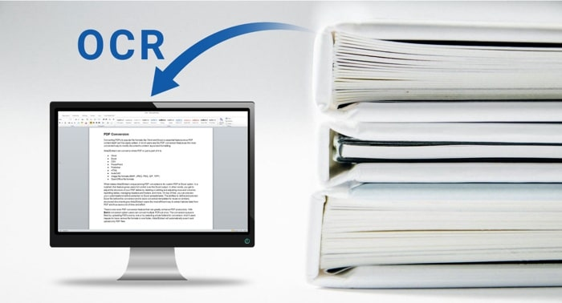

OCR
¿que es OCR?
El reconocimiento óptico de caracteres (ROC), generalmente conocido como reconocimiento de caracteres y expresado con frecuencia con la sigla OCR (del inglés Optical Character Recognition), es un proceso dirigido a la digitalización de textos, los cuales identifican automáticamente a partir de una imagen símbolos o caracteres que pertenecen a un determinado alfabeto, para luego almacenarlos en forma de datos. Así podremos interactuar con estos mediante un programa de edición de texto o similar.

VENTAJAS DE LOS SISTEMAS OCR
- Ahorro de tiempo
- Documentos editables
- Escaneo de imágenes
- Mayor productividad y mayor calidad en el servicio
- Elimina los archivos físicos
- Accesibilidad para personas con discapacidad auditiva o visual
- ROI rápido
- Procesamiento programable
- Eliminación de información confidencial
DESVENTAJAS DE LOS SISTEMAS OCR
- Calidad de las imágenes: para un reconocimiento óptimo del texto, es necesario que los documentos originales tengan la suficiente calidad y resolución
- Texto manuscrito o tipografías poco comunes: el software OCR tiene todavía problemas para reconocer correctamente la letra manuscrita o tipografías poco habituales
- Si estás interesado en agilizar la captura de datos en tu empresa, ponte en contacto con nosotros y uno de nuestros consultores analizará vuestras necesidades para ofrecerte la solución más adecuada.